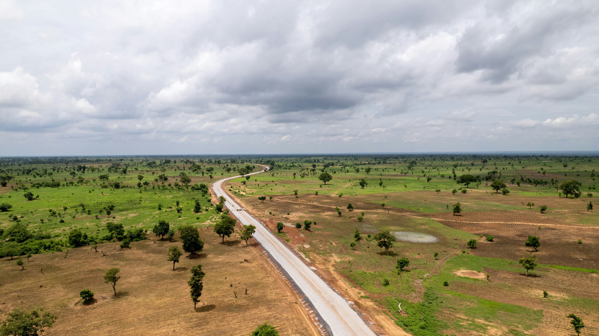
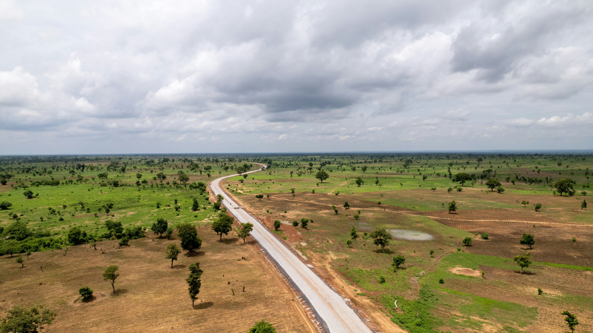
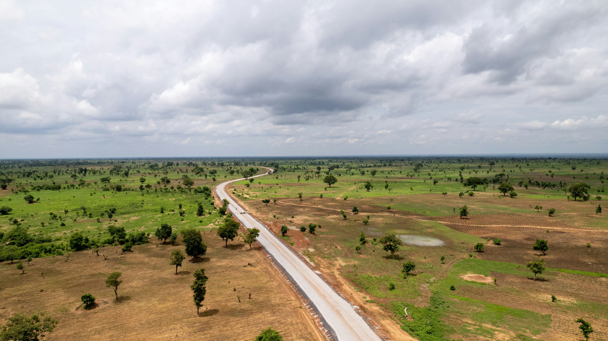
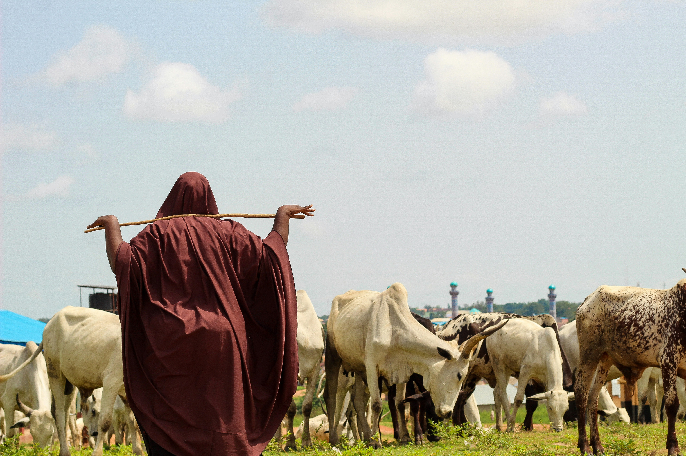
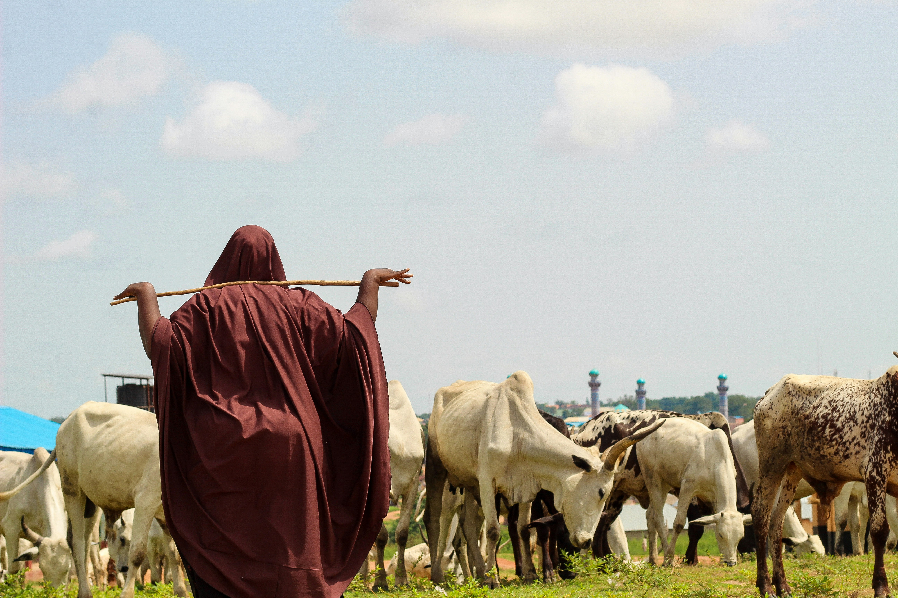
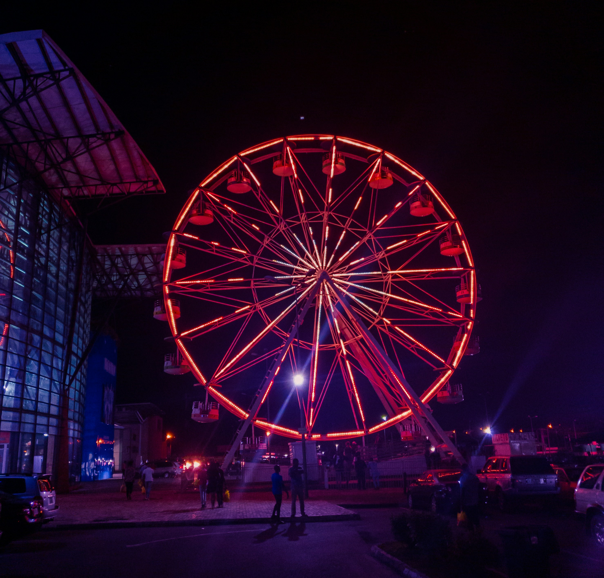
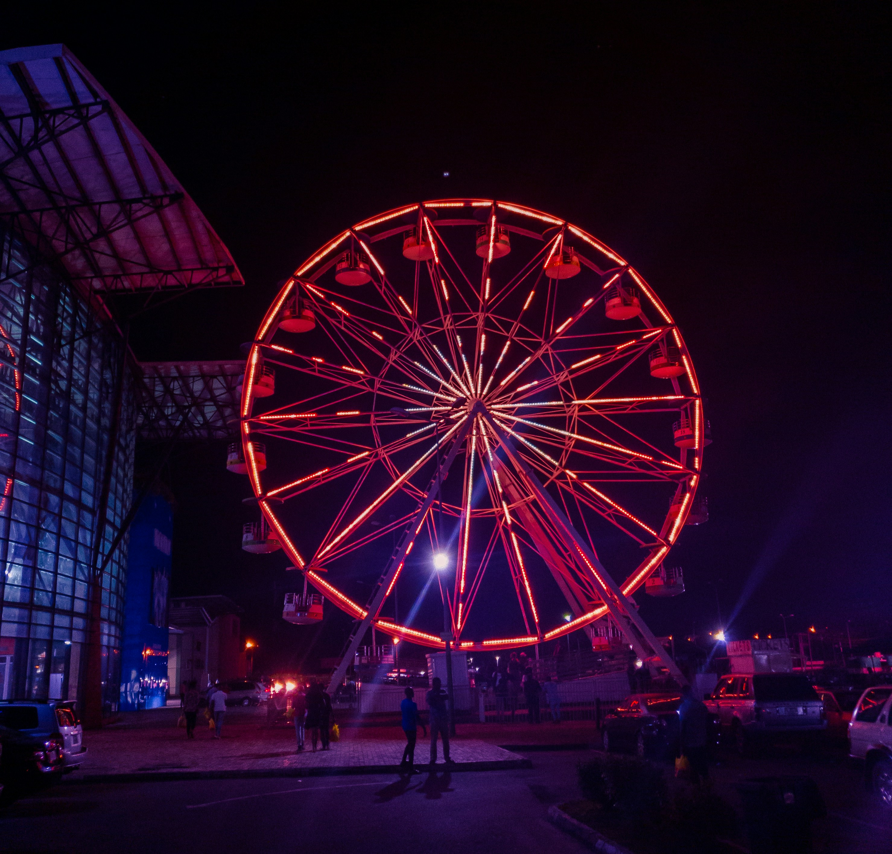
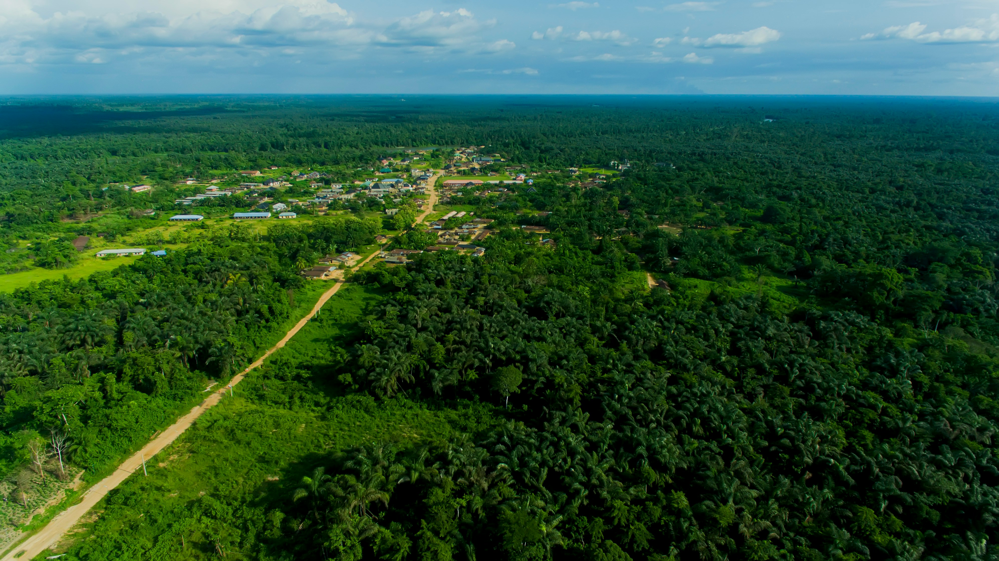
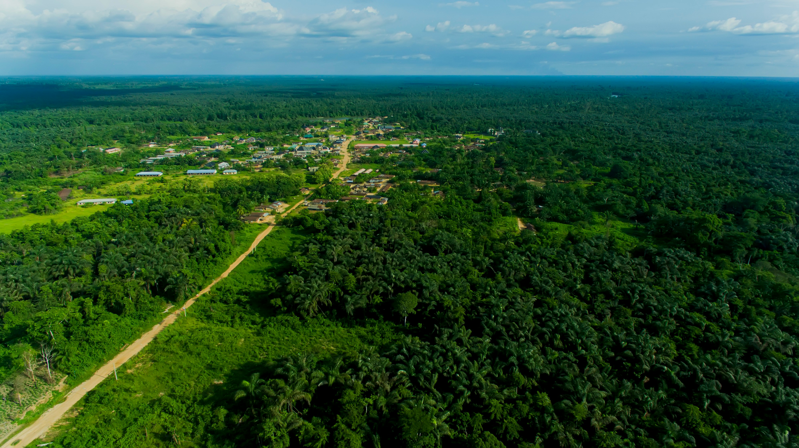

North central
The North Central is the one of the six geopolitical zones of Nigeria representing the majority of the country's Middle Belt in nigeria
 

- benue
- kogi
- kwara
- nasarawa
- niger
- plateau
The North Central is the one of the six geopolitical zones of Nigeria representing the majority of the country's Middle Belt in nigeria

The North East is the one of the six geopolitical zones of Nigeria representing both a geographic and political region of the country's northeast
 

The North West is the one of the six geopolitical zones of Nigeria representing both a geographic and political region of the country's northwest.


The South West (often hyphenated to the South-West) is the one of the six geopolitical zones of Nigeria representing both a geographic and political region of the country's southwest. It comprises six states


The zone is bounded by the River Niger on the west, the riverine Niger Delta on the south, the flat North Central to the north, and the Cross River on the east.
 

The South South (often hyphenated to the South-South) is one of the six geopolitical zones of Nigeria representing both a geographic and political region of the country's eastern coast. It comprises six states
 
